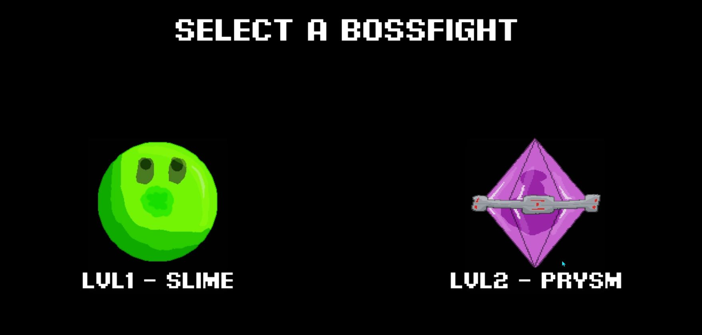

GRAVIDASHER
A game about steering, where gravity will be your ally.
Contributions:.
level design for the second level.
Sprite creation.
Game Design — Narrative & Level Design.
A game about steering, where gravity will be your ally.
Contributions:.
level design for the second level.
Sprite creation.
It is a 3D isometric stealth and exploration game where you play Milo, a ferret who has been trapped on an island full of killer robots. Your mission: to save the survivors and repair the ship that will take you back home.
Contributions:.
Worldbuilding.
Narrative.
Dialogues
Level Producer/Lead
I'm Paloma Kiran de la Hoz, a game designer. I completed a master's degree in Game Design at U-tad (Madrid) and specialize in narrative and level design. Before that, I worked as a croupier and studied emergency health care — experiences that have helped me to improve my communication and interpersonal skills.
Narrative Design • Level Design